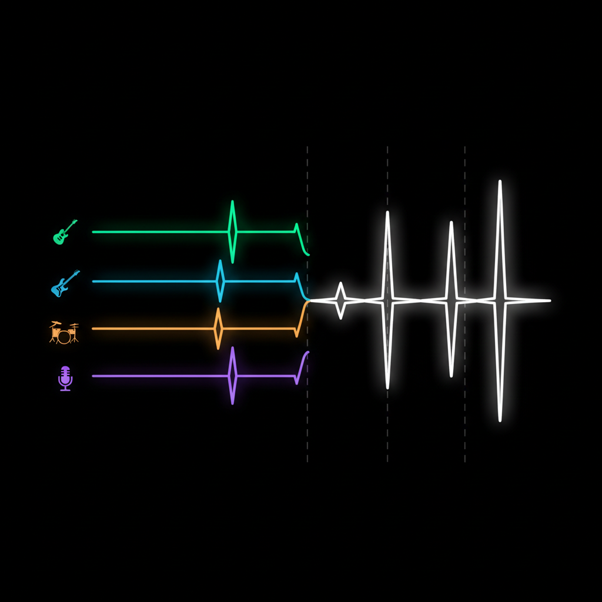
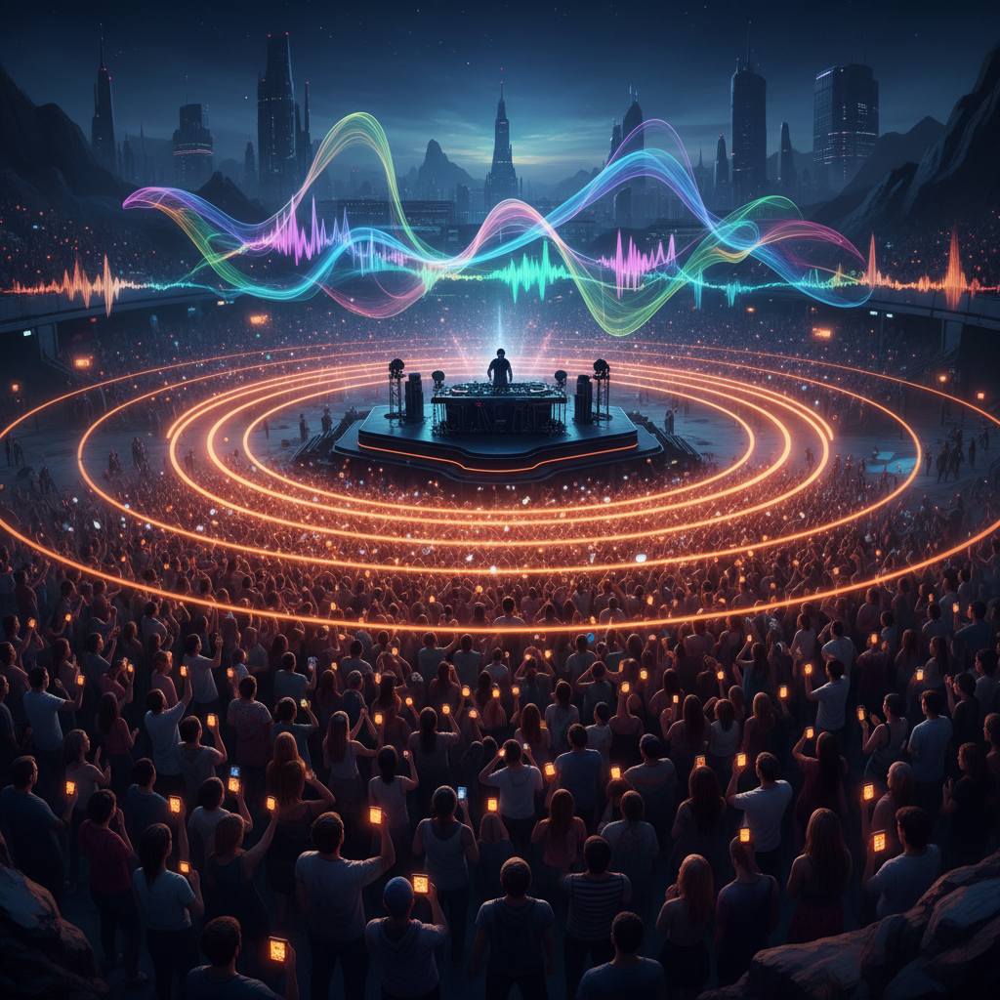
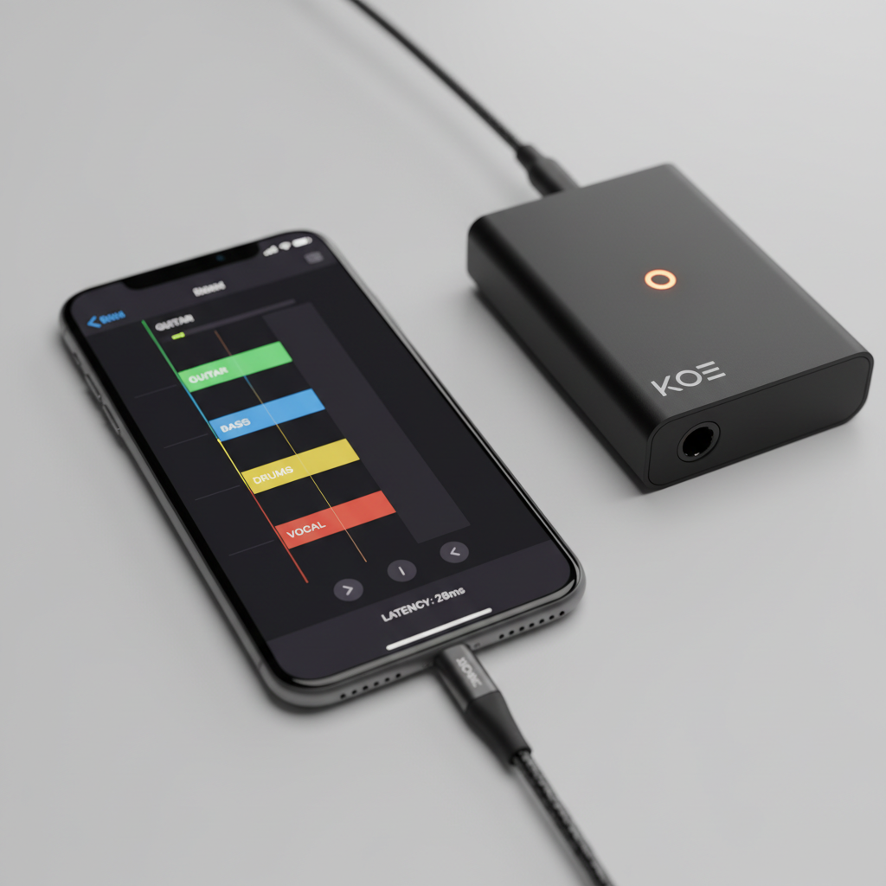

H1

Guitar → 4デバイスに配信
ギターシールド→iPhone→WiFi→部屋中のKoeデバイス。30ms表示。オレンジの光の軌跡
H2

バンド全体 → マルチチャンネル
ギター/ベース/ドラム/ボーカル各iPhoneから、色分けされた4台のKoeへ。分散PAシステム
H3

ハーモニー波形
4つの楽器波形が完璧に同期して右側で1つのハーモニーに合流。データビジュアライゼーション
H4

群衆ハーモニー
フェス空撮。観客がハミング→AIがハーモニー生成→空中に浮かぶ音波。SF的
H5

アプリUI + デバイス
iPhoneの画面に4chミキサーUI(28ms表示)。横にKoeデバイス。ギターケーブル接続
H6

シグナルフロー図
ギター→iPhone→WiFi→5台のKoe。30msストップウォッチ。キーノート風インフォグラフィック